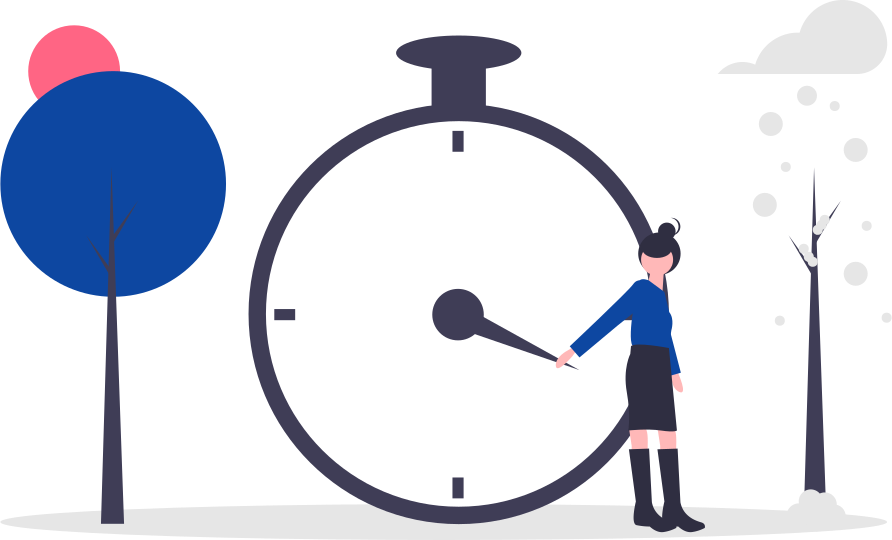

<mat-tab-group
	class="tab-group"
	[(selectedIndex)]="currentIndex"
	*ngIf="timeOkay; else wait"
>
	<mat-tab
		*ngFor="let slot of (slots$ | async)"
		[label]="slot.toUpperCase()"
		class="tab"
	>
		<div *ngIf="dataSource$ | async as dataSource" class="table-container">
			<div
				class="courses-wrapper"
				*ngIf="dataSource[slot].length > 0; else noCoursesFound"
			>
				<csl-data-table
					[data]="dataSource[slot]"
					[columns]="displayedColumns"
					(actionClick)="handleEvent($event)"
					class="table"
				>
					<h1 header>Corsi in fascia {{ slot.toUpperCase() }}</h1>
				</csl-data-table>

				<div class="drag-drop">
					<h1>La tua scelta per la fascia {{ slot.toUpperCase() }}</h1>

					<mat-card *ngIf="signupDraft[slot].course">
						{{ signupDraft[slot].course.label }}
					</mat-card>

					<button
						mat-flat-button
						color="primary"
						class="confirm"
						[disabled]="!signupDraft[slot].course || signupDraft[slot].confirmed === true"
						(click)="confirmDraft(slot)"
					>
						Conferma
					</button>
				</div>
			</div>

			<ng-template #noCoursesFound>
				<div class="alert-container">
					<csl-alert color="primary">
						Non ci sono corsi in questa fascia!
					</csl-alert>
				</div>
			</ng-template>
		</div>
	</mat-tab>
</mat-tab-group>

<ng-template #wait>
	<div class="wait-err">
		<h1>
			Tic... tac... le iscrizioni apriranno lunedì 22 marzo alle 18:00.
			<br />
			Prova a passare il tempo leggendo qualche <a [routerLink]="['..', 'qp']">articolo di Quinto Piano</a>!
		</h1>
		
	</div>
</ng-template>
